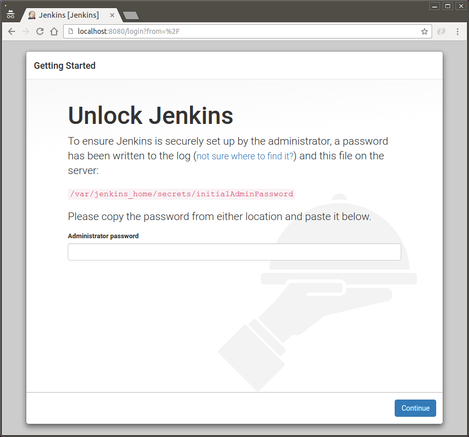
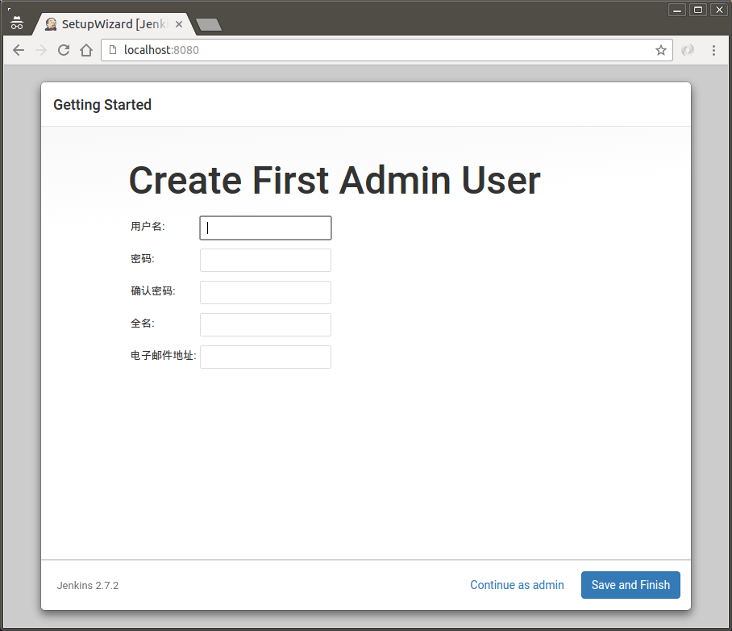
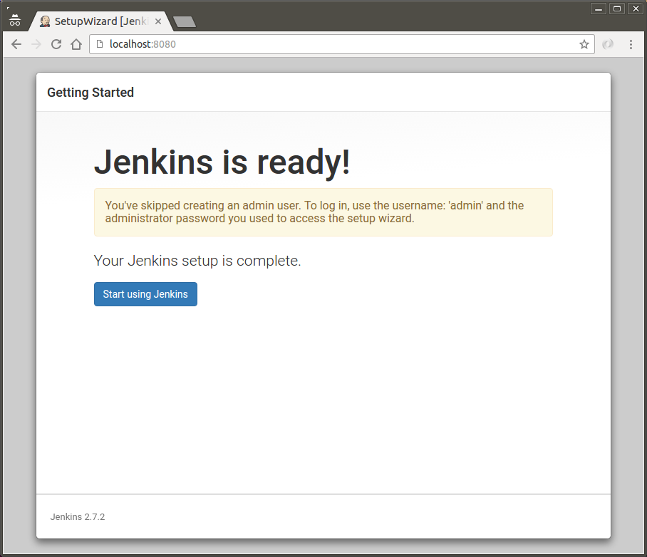
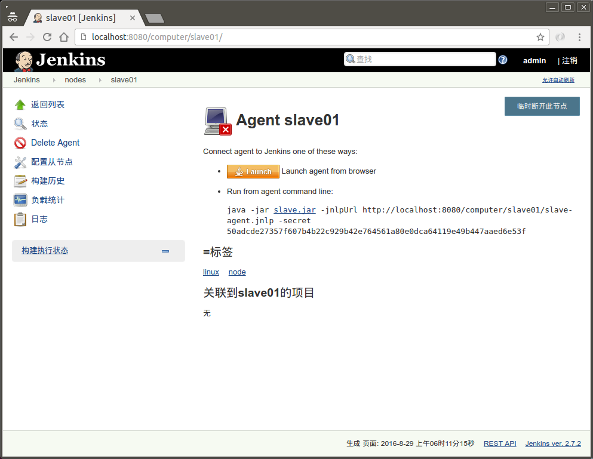
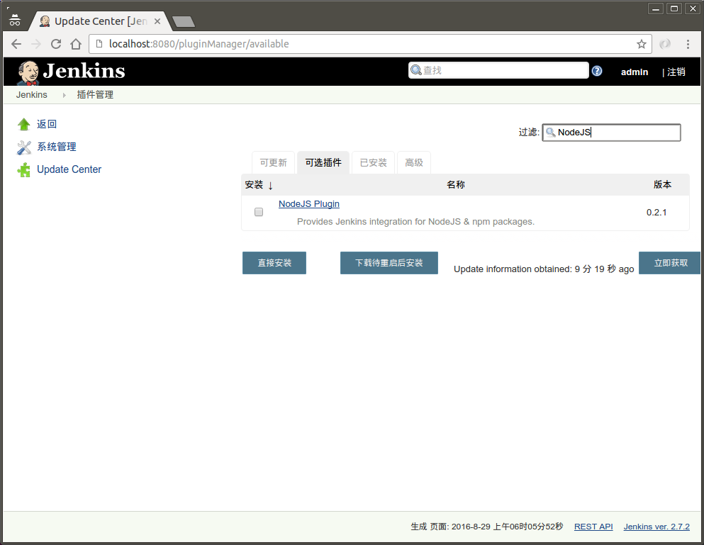
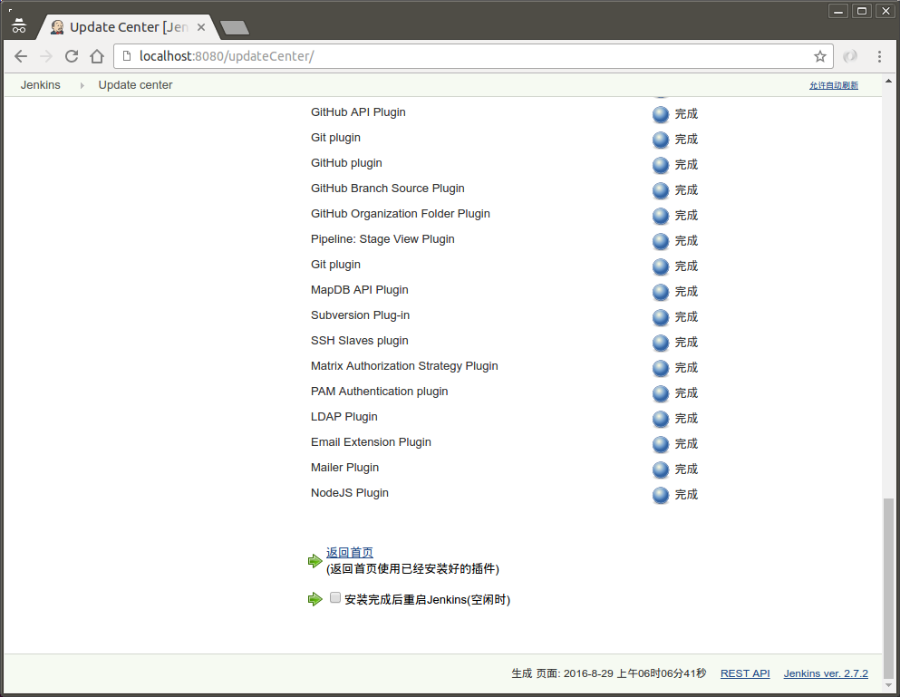
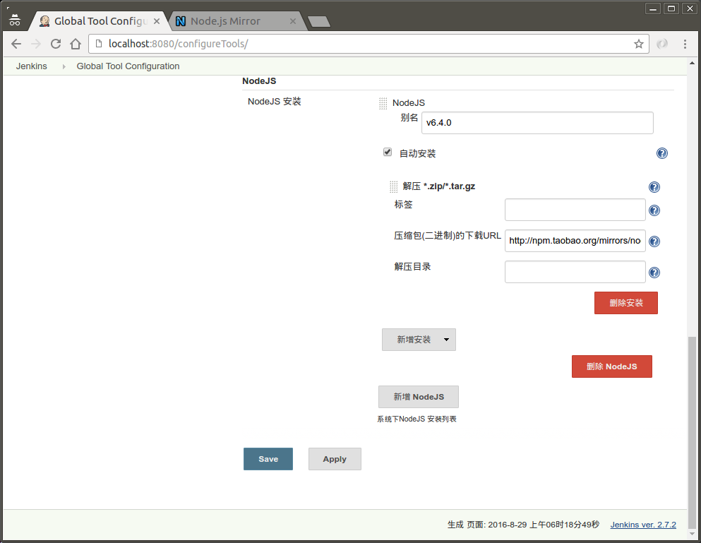
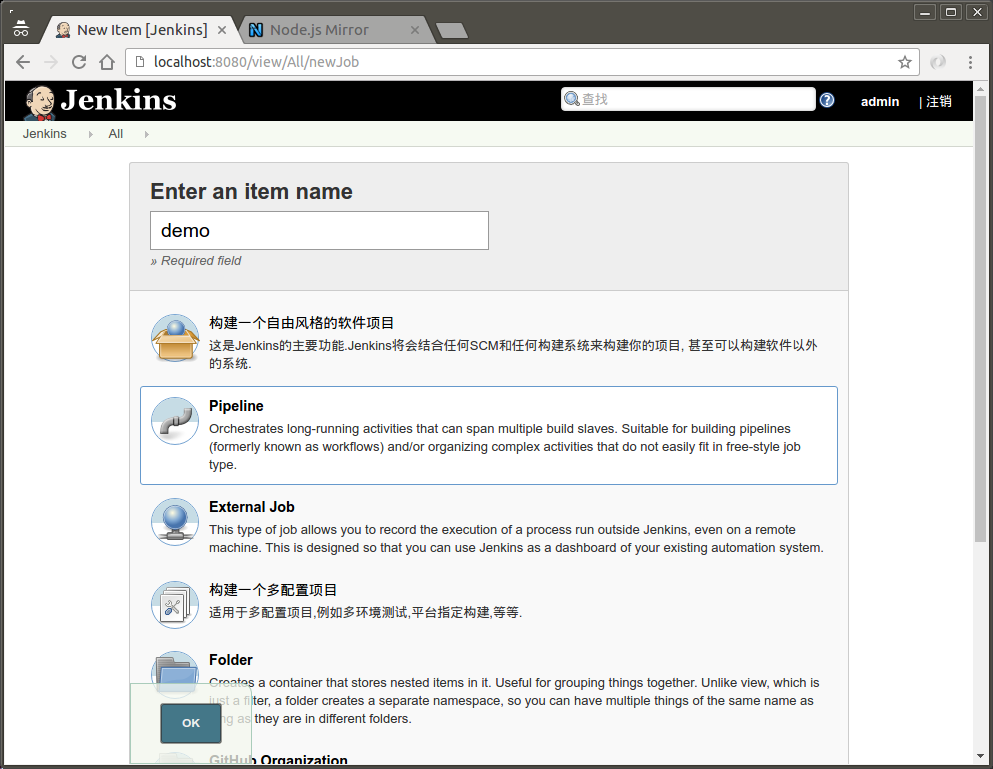
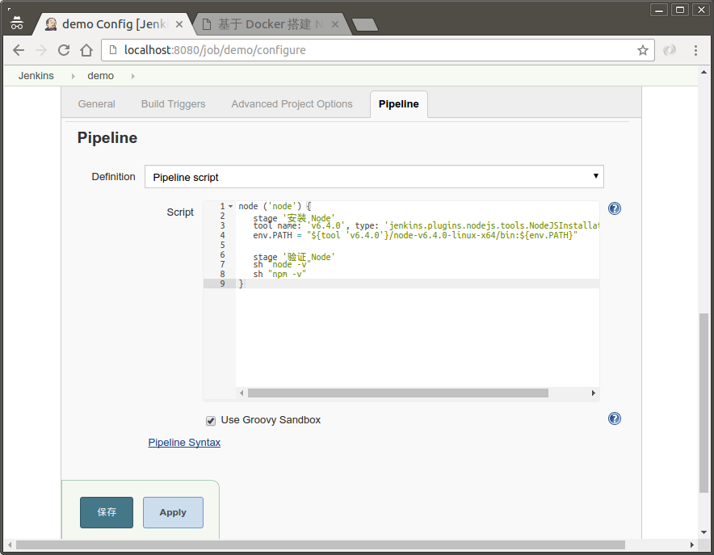
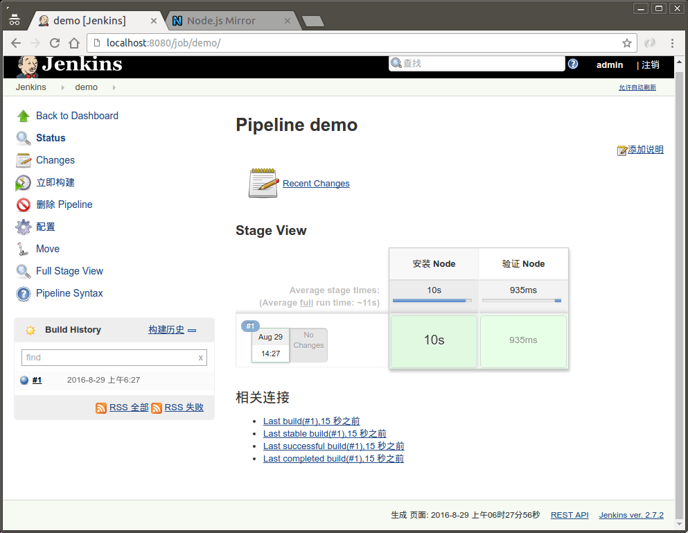

要实现 Webpack 项目的持续集成和持续部署需要使用 Jenkins 这一工具。通过本文，你可以了解到怎样在 Docker 里运行 Jenkins 最新的 2.x 版本和 Jenkins Slave，并基于此搭建一个多版本、可伸缩的 Node.js 执行环境。
准备工作
- 一个稳定的
Docker环境，一点点Docker的基础知识 - 了解
Jenkins在持续集成/持续部署实践中的作用
启动 Jenkins 容器
|
|
下载速度慢别着急
如果你在国内，一定会遇到网速不给力的情况。比如安装 Docker Engine，或者下载镜像的时候，总是卡的要死甚至有的时候下载链接被重置。这个时候可以选择一个国内的 Docker 加速器。
配置持久化
可以在执行 docker run 的时候增加一个 -v 参数：
|
|
如果只是简单的实验，在启动 Jenkins 的时候不用指定 Volume，但如果是产品环境，一定要指定一个 Volume 来实现持久化。只有这样用户列表，项目设置，安装的插件等设置才会被保留。
启动成功
用浏览器打开 http://localhost:8080，看到的是 Jenkins 安装初始化的页面。

会提示输入 admin 帐号的密码，这个密码是在 Jenkins 初次启动的时候随机生成的，并一直保存在容器里。
可以通过下面的命令查看 admin 的密码 （即查看容器里某个文件的内容）
|
|
登录进去后需要选择初始化安装下载的插件，一般安装默认的插件列表即可。
下一步，Jenkins 会提示你创建一个除了 admin 之外的管理员用户，可建可不建。

看到这个页面，就说明 Jenkins 安装成功了

添加 Slave 节点
为什么使用 Slave
在我们团队使用 Jenkins 的过程中就遇到过这样的一件事：某个团队成员在 Jenkins 所在的系统下装了一个很彪悍的系统软件，把 Home 目录给整个加密了，结果 Jenkins 上的构建纷纷失败。
这提示我们，持续集成的环境应当尽量保持独立，当多个用户共用同一个 Jenkins Master 节点的时候，很容易因为一个成员改变了机器配置而对另一个构建造成影响。
所以，能用 Slave 做的事情尽量用 Slave 去做， 何况 Docker 里创建一个 Slave 是非常容易的事情。
新建 Slave 节点
在 系统管理 管理节点 页面，点击左边的 新建节点
节点名称为 slave01，点击 OK 后自动进入节点设置页面
配置标签为 linux node 中间有空格，启动方法保留默认的 'Launch agent via Java Web Start'， 然后保存
从 节点列表 页面进入刚新建好的 slave01 节点，这个时候节点还不可以用，处在一个等待链接的状态

如图 -secret 后面跟的一段随机的密码字符串很重要，因为下面一步只有 secret 和 name 都一致才能连接成功。
启动 Slave 容器，连接节点
|
|
启动容器后刷新 Jenkins 的节点列表， 很快 slave01 节点就变成可用的啦。
配置 NodeJS Plugin
Jenkins 的环境里默认是不带 Node.js 的，我们可以通过安装一个叫做 NodeJS Plugin 插件来实现 Node.js 的自动安装。
安装 Node.JS 插件
在 系统管理 管理插件 可选插件 页面，在过滤输入框里输入 NodeJS

选中它并点击 下载待重启后安装，然后勾选 安装完成后重启 Jenkins 选项，等待插件安装完成 Jenkins 会自动重启。

配置 NodeJS 插件
在 系统管理 Global Tool Configuration 页面，滚动到最下面的 NodeJS 安装

按照图示新建 v6.4.0 的版本，勾选 自动安装 选项，并在压缩包 URL 里填入
|
|
这是目前国内最快最稳定的 NodeJS 下载源了，谢谢马云爸爸！
为什么使用 NodeJS Plugin 来安装 Node.js
有这样几个好处：
- 和
Jenkins集成得最好，新添加的Slave节点会自动安装 Node.js 依赖 - 避免了登录到
Slave安装 Node.js 可能改变操作系统配置的问题 - 可以在不同的构建里使用不同的 Node.js 版本
新建 Pipeline 项目
项目名为 demo ，以 Jenkins 2.x 版本为例，类型选择为 pipeline

配置 Jenkinsfile
因为主要就是为了验证 Node.js 环境安装成功并且可用，所以 Pipeline script 只有两个 Stage

内容如下
|
|
其中
|
|
上面这行表示选中具有 node 标签的节点。
|
|
上面这行指明了构建过程会用到我们之前配置的 Node.js 工具的 v6.4.0 版本
|
|
上面这行会修改构建的 PATH 环境变量，否则会提示找不到 node 和 npm 命令
点击 保存，然后点击 立即构建，这样我们的 Node.JS 环境就搭建成功了

回顾
- 准备工作
- 启动
Jenkins容器，以admin登录，并完成Jenkins的初始化设置 - 添加
Slave节点，并连接Slave容器 - 安装和配置
NodeJS Plugin管理多个版本的Node.js - 新建
Pipeline项目，验证Node.js安装